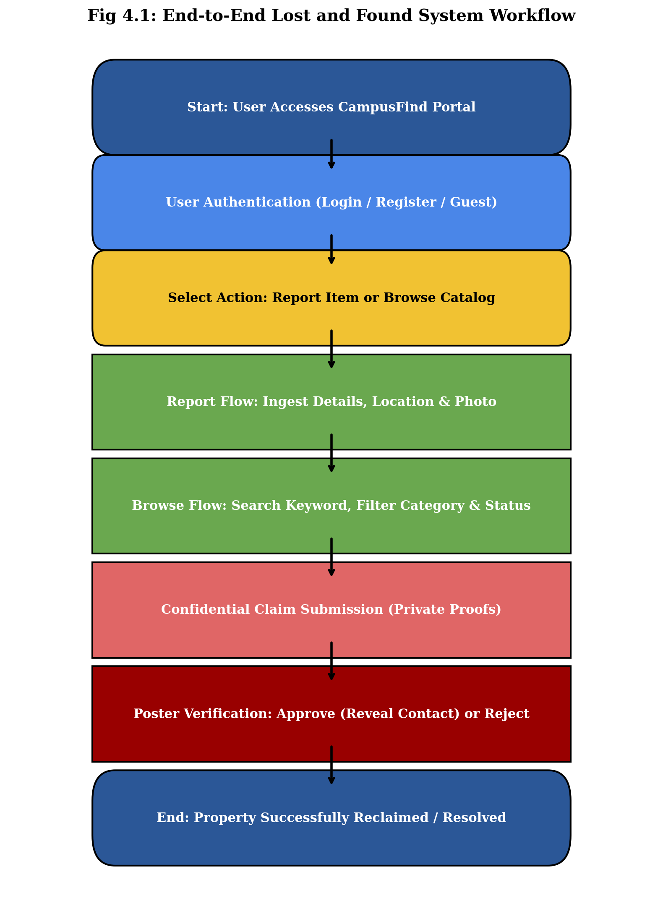
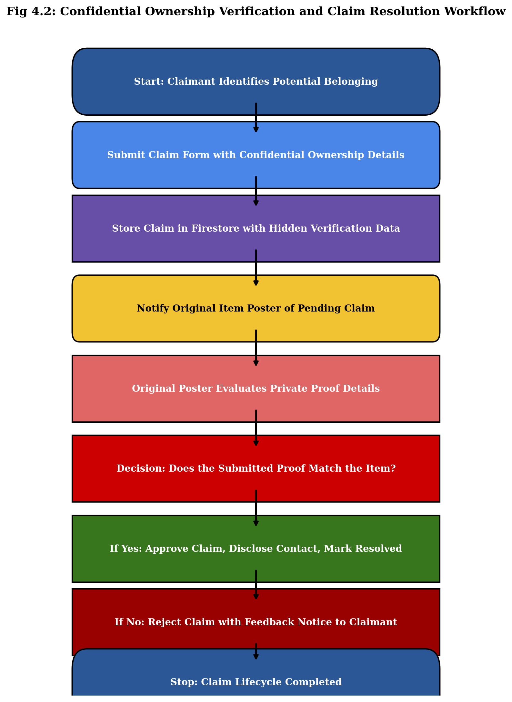
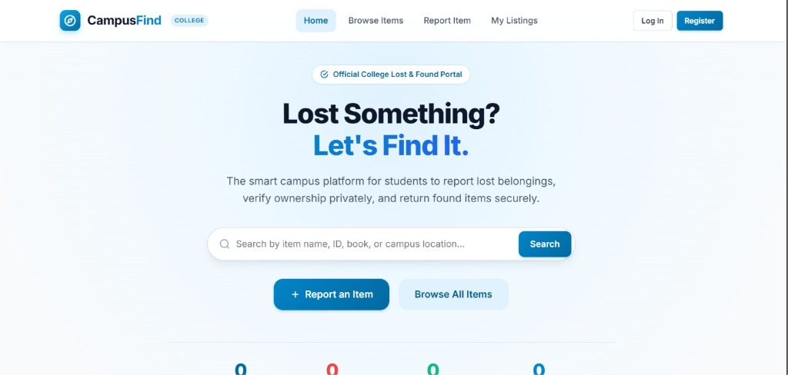
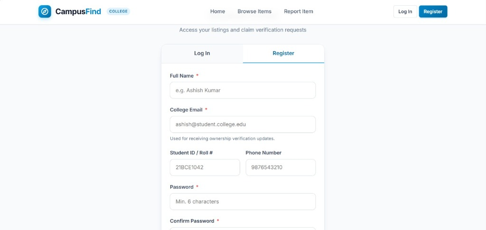
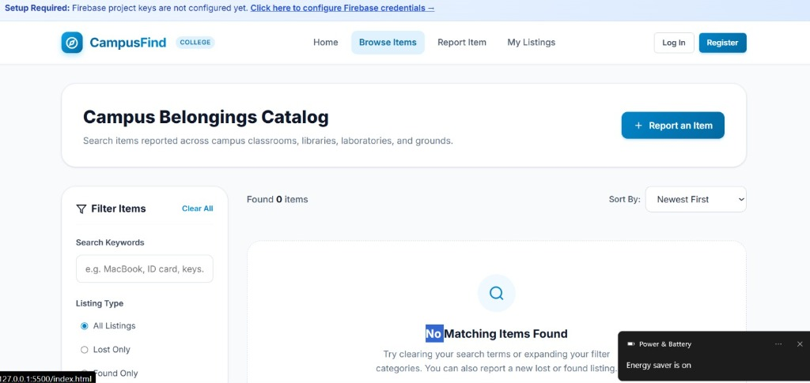
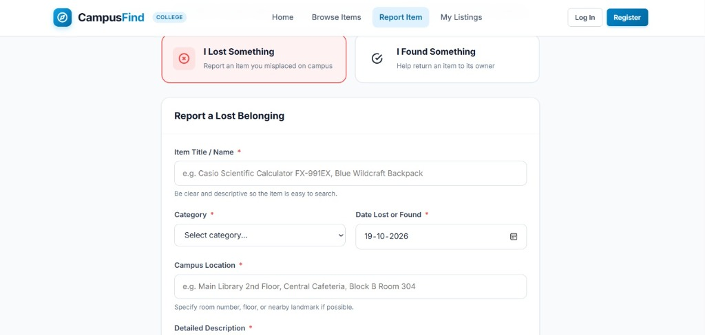
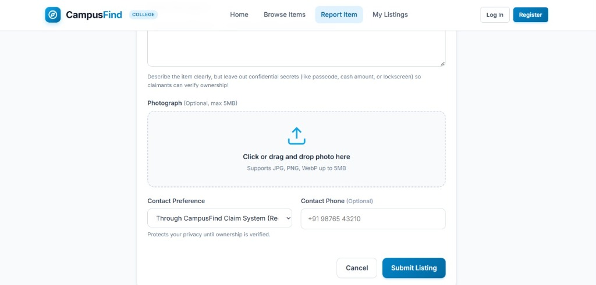
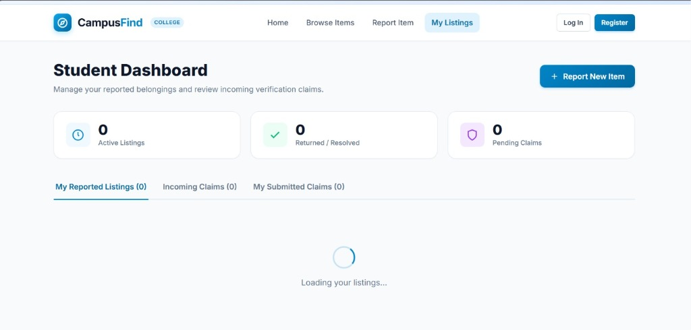

Submitted in partially fulfilment for the requirement for the award of the degree of
in
Submitted by
Prasoon Pathak
(2402840109004)
Under the Supervision of
Mr. Abhishek Ray
To be a center of excellence in the field of Computer Science and Engineering for producing talented engineers to ethically serve constantly changing needs of society and industry throughout their career and life.
M1. Accomplish excellence with committed faculty by providing theoretical foundation and practical skills for solving complex engineering problems in the state-of-the-art trends in Computer science and allied disciplines.
M2. To foster skills and competency, generating novel ideas, entrepreneurship and model creations focused towards deep knowledge, interpersonal skills and leadership.
M3. To develop habitude of research among faculty and students in the area of Computer Science & Allied disciplines by providing the desired environment, for addressing the needs of industry and society.
M4. To mould the students with ethical principles in thoughts, expression and deeds.
| S. No | Topic | Page No. |
|---|---|---|
| 1 | Introduction | 1 |
| 2 | Requirement | 3 |
| 3 | Conceptual Background | 4 |
| 4 | Implementation | 8 |
| 4.1 | Coding | 8 |
| 4.2 | Flow Chart | 12 |
| 5 | User Interface | 14 |
| 6 | Conclusion | 20 |
| 7 | References | 21 |
| 8 | Appendix | 22 |
In higher educational institutions, thousands of students, faculty, and administrative personnel navigate campus facilities daily, including lecture complexes, laboratories, libraries, cafeterias, and auditoriums. In this active academic environment, personal belongings such as student identity cards, textbooks, notebooks, scientific calculators, laboratory coats, electronic devices (laptops, mobile phones, earphones), and keys are frequently misplaced.
Conventional methods of managing lost and misplaced articles on college campuses rely primarily on physical lost-and-found registers maintained by security staff, paper notices pinned to bulletin boards, and informal messaging broadcasts across student WhatsApp and Telegram groups. These methods suffer from severe structural shortcomings:
The objective of this project is to develop and deploy CampusFind, a centralized, responsive web platform tailored to academic institutions. The specific objectives include:
The platform covers all academic, administrative, and recreational facilities across the campus. The web application is built to run responsively on smartphones, tablets, and desktop computers without requiring native app installations. The backend utilizes Google Firebase serverless cloud architecture, ensuring scalable real-time synchronization, continuous availability, and enterprise-grade security.
During the industrial summer training program, foundational and advanced concepts of modern full-stack web engineering, cloud-native computing, asynchronous programming, and software architecture were thoroughly explored:
Training emphasized semantic HTML5 markup, which establishes clear content structure, improves accessibility (a11y), and assists search indexing. In CSS3, modular style architecture was emphasized using CSS Flexible Box (Flexbox) for one-dimensional layouts and CSS Grid for two-dimensional component matrices. The utilization of CSS Custom Properties (CSS variables) enabled unified design tokens across typography, color palettes, spacing, and elevation shadows, eliminating redundant styling.
In-depth modules covered JavaScript's asynchronous execution model, event loops, call stacks, Promises, and the async/await paradigm. The adoption of native ES Modules (import / export) was covered to enforce single-responsibility modularity across database helpers, authentication services, and user interface controllers.
Training analyzed the advantages of serverless cloud platforms compared to traditional monolithic servers. Google Firebase was utilized as the core BaaS ecosystem, providing automated horizontal scalability, zero-downtime deployments, managed SSL certificates, and serverless database persistence without manual server administration.
Unlike relational database management systems (RDBMS) constrained by static tabular schemas, Cloud Firestore organizes data into hierarchical collections and JSON-like documents. Key modeling concepts studied included:
where ==) with ordering (orderBy).
Security in serverless architecture is enforced through declarative rules evaluated directly at the database gateway. Training focused on writing granular Firestore Security Rules to validate payload schemas, enforce user authentication (request.auth != null), and restrict private proof details to item owners and administrators.
The CampusFind platform was built using a lightweight, performant, and standard-compliant technology stack:
index.html, browse.html, report.html, dashboard.html, and login.html) incorporating native input validation, datalists, and accessible modal elements.main.css (design tokens and global layout), components.css (buttons, cards, badges, and modals), pages.css (page-specific layouts), and responsive.css (viewport media queries).auth.js: Handles student registration, credential authentication, session persistence, and role guards.db.js: Implements Firestore CRUD operations for listings, confidential claim workflows, and platform analytics.storage.js: Executes client-side image validation (JPEG/PNG/WebP, ≤5 MB) and uploads photos to Cloud Storage.ui.js: Controls dynamic DOM updates, feedback toast notifications, confirmation dialogs, and date formatting.
import { initializeApp } from "https://www.gstatic.com/firebasejs/10.8.0/firebase-app.js";
import { getAuth } from "https://www.gstatic.com/firebasejs/10.8.0/firebase-auth.js";
import { getFirestore } from "https://www.gstatic.com/firebasejs/10.8.0/firebase-firestore.js";
import { getStorage } from "https://www.gstatic.com/firebasejs/10.8.0/firebase-storage.js";
import { firebaseConfig } from "./firebase-config.js";
// Initialize core Firebase services
export const app = initializeApp(firebaseConfig);
export const auth = getAuth(app);
export const db = getFirestore(app);
export const storage = getStorage(app);
import { auth, db } from "./firebase-init.js";
import { createUserWithEmailAndPassword, updateProfile } from "https://www.gstatic.com/firebasejs/10.8.0/firebase-auth.js";
import { doc, setDoc, serverTimestamp } from "https://www.gstatic.com/firebasejs/10.8.0/firebase-firestore.js";
export async function registerUser(name, email, password, studentId = "", phone = "") {
const userCredential = await createUserWithEmailAndPassword(auth, email, password);
const user = userCredential.user;
await updateProfile(user, { displayName: name });
const userDocRef = doc(db, "users", user.uid);
const userData = {
uid: user.uid,
name: name.trim(),
email: email.toLowerCase().trim(),
studentId: studentId.trim(),
phone: phone.trim(),
role: "student",
createdAt: serverTimestamp()
};
await setDoc(userDocRef, userData);
return { user, profile: userData };
}
import { db } from "./firebase-init.js";
import { collection, addDoc, getDocs, query, where, serverTimestamp } from "https://www.gstatic.com/firebasejs/10.8.0/firebase-firestore.js";
const ITEMS_COLLECTION = "items";
export async function createItem(itemData) {
const docRef = await addDoc(collection(db, ITEMS_COLLECTION), {
...itemData,
status: itemData.status || "active",
createdAt: serverTimestamp(),
updatedAt: serverTimestamp()
});
return docRef.id;
}
export async function getItems({ type = "all", category = "all", status = "all", searchQuery = "" }) {
let q = collection(db, ITEMS_COLLECTION);
const conditions = [];
if (type !== "all") conditions.push(where("type", "==", type));
if (category !== "all") conditions.push(where("category", "==", category));
if (status !== "all") conditions.push(where("status", "==", status));
const queryRef = conditions.length > 0 ? query(q, ...conditions) : q;
const snapshot = await getDocs(queryRef);
let results = [];
snapshot.forEach(doc => results.push({ id: doc.id, ...doc.data() }));
if (searchQuery.trim()) {
const qLower = searchQuery.toLowerCase().trim();
results = results.filter(item =>
(item.title && item.title.toLowerCase().includes(qLower)) ||
(item.description && item.description.toLowerCase().includes(qLower)) ||
(item.location && item.location.toLowerCase().includes(qLower))
);
}
return results;
}
const CLAIMS_COLLECTION = "claims";
export async function submitClaim(itemId, itemTitle, claimantData, proofDetails) {
const claimRecord = {
itemId,
itemTitle,
claimantId: claimantData.uid,
claimantName: claimantData.name,
claimantEmail: claimantData.email,
claimantPhone: claimantData.phone || "",
proofDetails: proofDetails.trim(),
status: "pending",
createdAt: serverTimestamp()
};
const docRef = await addDoc(collection(db, CLAIMS_COLLECTION), claimRecord);
return docRef.id;
}
import { storage } from "./firebase-init.js";
import { ref, uploadBytes, getDownloadURL } from "https://www.gstatic.com/firebasejs/10.8.0/firebase-storage.js";
const MAX_IMAGE_SIZE = 5 * 1024 * 1024; // 5 MB
const ALLOWED_MIME_TYPES = ["image/jpeg", "image/png", "image/webp"];
export async function uploadItemImage(file, userId) {
if (!ALLOWED_MIME_TYPES.includes(file.type)) {
throw new Error("Invalid image format. Allowed formats: JPG, PNG, WebP.");
}
if (file.size > MAX_IMAGE_SIZE) {
throw new Error("File exceeds 5MB size limit.");
}
const fileExt = file.name.split(".").pop();
const filePath = `items/${userId}/${Date.now()}_${Math.random().toString(36).substring(7)}.${fileExt}`;
const storageRef = ref(storage, filePath);
const snapshot = await uploadBytes(storageRef, file);
return await getDownloadURL(snapshot.ref);
}
rules_version = '2';
service cloud.firestore {
match /databases/{database}/documents {
function isAuthenticated() {
return request.auth != null;
}
match /items/{itemId} {
allow read: if true;
allow create: if isAuthenticated();
allow update, delete: if isAuthenticated() &&
(resource.data.ownerId == request.auth.uid || request.auth.token.role == "admin");
}
match /claims/{claimId} {
allow create: if isAuthenticated();
allow read: if isAuthenticated() &&
(resource.data.claimantId == request.auth.uid ||
resource.data.itemOwnerId == request.auth.uid ||
request.auth.token.role == "admin");
allow update: if isAuthenticated() &&
(resource.data.itemOwnerId == request.auth.uid || request.auth.token.role == "admin");
}
}
}

The flowchart in Figure 4.1 illustrates the end-to-end operational logic of the CampusFind platform, connecting user access, credential authentication, item reporting, catalog querying, and ownership claim resolution.

The flowchart in Figure 4.2 details the confidential verification protocol, illustrating the submission of hidden identification proofs by claimants and the review process conducted by the original item finder.
The user interface of CampusFind is built around clean visual aesthetics, high accessibility, and responsive navigation across all mobile, tablet, and desktop form factors. This chapter describes the core functional screens developed in the application, accompanied by actual output screenshots, figure captions, and operational explanations.

The landing page introduces students to the platform, presenting the hero banner, real-time statistics counter, a universal search bar for instantaneous item lookup, and primary call-to-action buttons for reporting or browsing campus belongings.

The registration view enables students to establish secure platform accounts by providing their full name, official college email, university student ID/roll number, phone number, and password, provisioning synchronized credentials in Firebase Authentication and Firestore.

The browse catalog provides comprehensive search and multi-parameter filtering options, allowing students to filter items by keywords, listing types (All Listings, Lost Only, Found Only), and sorting preferences with responsive layout states and feedback counters.

The initial segment of the item reporting interface features a dual-toggle selector ("I Lost Something" vs. "I Found Something") along with input fields for item title, category dropdown, incident date picker, campus location, and detailed description.

The submission module includes a drag-and-drop photograph uploader supporting JPG, PNG, and WebP formats up to 5MB, accompanied by privacy-preserving contact preferences that safeguard student phone numbers until ownership verification is approved.

The student dashboard consolidates personal account management, displaying active listings metrics, returned/resolved counts, pending claim counters, and tabbed navigation for reported belongings, incoming verification claims, and submitted claim statuses.
The CampusFind college lost and found management system successfully addresses the operational and security challenges associated with misplaced belongings across university campuses. By replacing fragmented manual registry books, physical bulletin board notices, and unindexed social messaging broadcasts with a centralized, web-based platform, the application delivers an efficient, secure, and transparent campus asset recovery workflow.
Throughout the project development cycle, the application achieved all core design and engineering milestones:
[1] L. Bass, P. Clements, and R. Kazman, Software Architecture in Practice, 2nd ed. Reading, MA: Addison Wesley, 2003. [E-book] Available: Safari e-book.
[2] D. Ince, “Acoustic coupler,” in A Dictionary of the Internet. Oxford University Press, [online document], 2001. Available: Oxford Reference Online, http://www.oxfordreference.com [Accessed: May 24, 2007].
[3] M. T. Kimour and D. Meslati, “Deriving objects from use cases in real-time embedded systems,” Information and Software Technology, vol. 47, no. 8, p. 533, June 2005. [Abstract]. Available: ProQuest, http://www.umi.com/proquest/. [Accessed November 12, 2007].
[4] W. K. Chen, Linear Networks and Systems. Belmont, CA: Wadsworth Press, 2003.
[5] K. A. Nelson, R. J. Davis, D. R. Lutz, and W. Smith, “Optical generation of tunable ultrasonic waves,” Journal of Applied Physics, vol. 53, no. 2, Feb., pp. 1144-1149, 2002.
[6] Google LLC, “Cloud Firestore Documentation and Security Rules Guide,” Google Firebase, [online document], 2024. Available: https://firebase.google.com/docs/firestore. [Accessed: October 19, 2026].